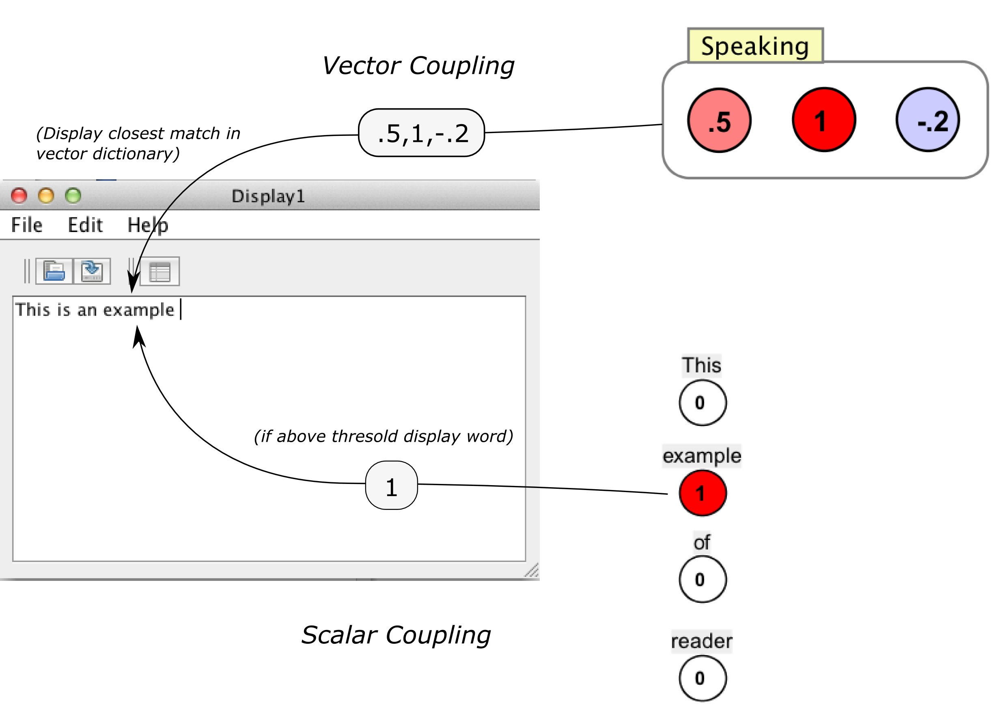

Display World
Display world intuitively models "speaking" by converting numbers to text, though it can also be useful as a diagnostic component. Any time it's useful to see text output in Simbrain, a display world can be used. Numbers and vectors from (mainly) neural networks are converted into text that is displayed in the display world. The basic way this works is shown below:

Display worlds consume numbers or lists of numbers and produce text. They are consumers in couplings. There are two kinds of display world consumers:
Scalar consumer: When the scalar coupling is activated, the associated token (character or word) is produced and displayed. Stored in the "token dictionary".
Vector consumer: When the vector coupling is activated, the associated token is produced and displayed. These vectors are specified in the "vector dictionary". When a vector comes in, the closest vector in the dictionary is found, and the corresponding token is displayed.
Scalar and Vector Dictionaries
The associations described above rely on scalar and vector dictionaries (see the screenshot below), accessed via the edit dictionary... menu item and button. A drop down box allows you to select which dictionary to view or edit.
The display world can be thought of as containing a set of "buttons" (one for each consumer). When a given button is activated by a coupling, the corresponding text is displayed. The buttons are stored in dictionaries. These are a bit more complex than their reader world counterparts. Here is how they work
Scalar dictionary: a simple list of tokens that can serve as consumers in scalar couplings. When the consumer receives a value, if it is above the threshold (set in the dictionary window), that token is produced.
Vector dictionary: a map that associates words with specific vectors. When a given consumder receives a vector, (currently) the closest matching word in the vector-space defined by the dictionary is displayed.

The dictionary is a simple list of words. Each entry in the dictionary is one word that can be written to the display world.
Edit / Display dictionary: To edit and display the current dictionary, press the grid-icon in the toolbar or select menu item.
Edit > Edit Dictionary. It is just a list of words. Rows can be added or deleted using straightforward commands. Dictionaries can also be loaded or saved to csv files, which are human-readable and easy to edit.
Extract-dictionary: Use this to select a text file, extract every word in it, and add it to the dictionary. After extracting text, try displaying the dictionary to see what you got.
As with reader worlds, attribute types are set in the coupling manager. Display world attributes are consumers, since text is parsed and then used to produce numerical values.
String-reader: (This attribute is not visible by default): This allows the component to directly receive text produced by a text based producer. It is not currently used much.
Word-reader: In this mode, each consumer is associated with a particular word, a particular entry in the dictionary. When the consumer consumes a numeric value, if that value is above a threshold, then the corresponding word is produced in the display world window. For example in a network you could right click on a node, go to "send scalar coupling to" and then in the context menu choose "DisplayWorld1" and then "cheese" to make activation of that neuron produce the word "cheese" in the display.
Display-Threshold: The numeric value that must be exceeded in order for a given word to be produced in the window. Used with word-reader attributes. By default it is set to .5.
Menu
File
Open: Opens a new component.
Save / Save As: Saves the current component.
Load Text: Uploads a text file.
Close: Closes current component.
Edit
Extract Dictionary: See above.
Edit Dictionary: See above
Preferences: Show preferences dialog.
Display Threshold: See display threshold in preferences.
Toolbar

|
Open new component. |

|
Save component. |

|
Edit dictionary. |